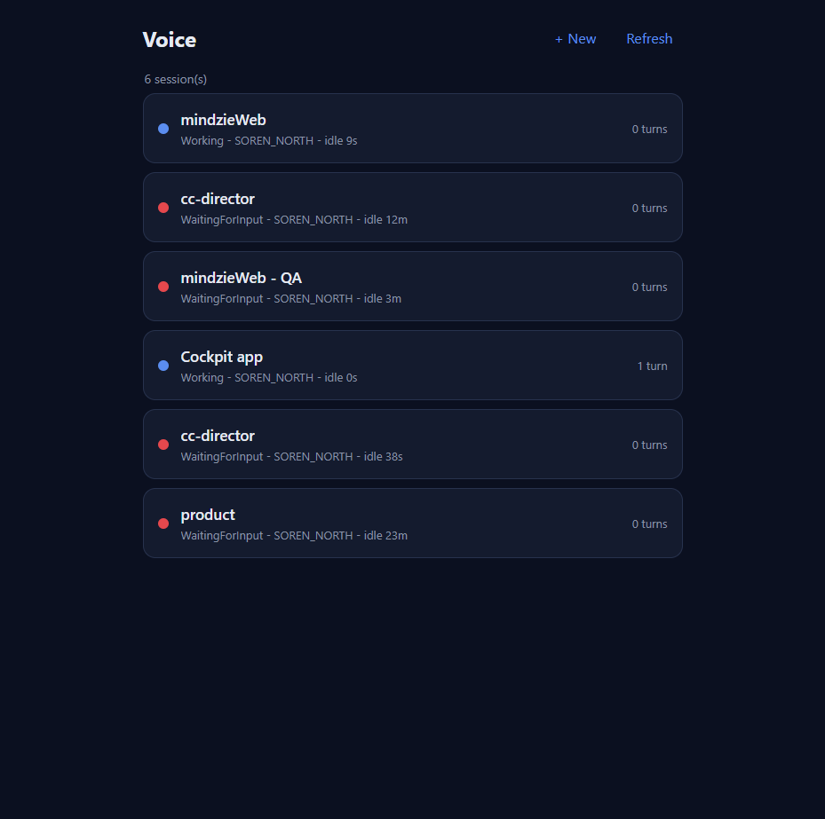

Title: [cockpit] Voice: show turn count on session rows and header
PR: #432 (branch feat/422-voice-turncount, stacked on feat/421-voice-newsession)
QA identity: independent QA Agent (separate from Developer)
Method: PR-branch modified pages/voice/ static files served behind the LIVE Gateway
(127.0.0.1:7878) via an independent QA harness on port 8423; real browser render; DOM read + screenshots;
cross-checked against the authoritative Gateway API.
The Developer read the count from GET /sessions/{id}/voice-turns (the pre-existing Gateway
voice-turn archive endpoint, GatewayVoiceTurnEndpoint.cs). PR #432 touches NO backend / no
.cs files - it is purely client-side (HTML/CSS/JS). Acceptance criterion 3 allows "an existing
endpoint ... or an existing DTO field - no new backend", and the Assumptions say "Prefer reading an existing
turns endpoint." For the Voice page, voice turns are the relevant turns, so this is a faithful satisfaction
of the criteria, not a miss.
| Session | sessionId | /voice-turns length |
|---|---|---|
| mindzieWeb | 1e3c1269 | 0 |
| cc-director | c748027a | 0 |
| mindzieWeb - QA | 269e6a0d | 0 |
| Cockpit app | 18e2a901 | 1 |
| cc-director | f3897ed0 | 0 |
| product | e4ef441d | 0 |
| # | Criterion | Expected | Actual | Result |
|---|---|---|---|---|
| 1 | Each /voice list row shows a turn count | Every row shows "N turns" | All 6 rows show a turn count; "Cockpit app" = "1 turn", others = "0 turns" (see list screenshot, DOM read) | PASS |
| 2 | Open session header shows the same count | Header pill = same "N turns" | "Cockpit app" header = "1 turn"; "product" header = "0 turns" (see header screenshot, DOM read) | PASS |
| 3 | Count from an existing endpoint, no new backend | Existing endpoint; no backend change | Uses pre-existing /voice-turns; PR changes 0 .cs files |
PASS |
| 4 | Count matches the session's actual turns | UI count == API count | UI: Cockpit app=1, all others=0 -- exactly matches the API baseline above | PASS |


VERIFIED - all 4 acceptance criteria met. QA PASS. (Option A: not merged; left for human merge.)